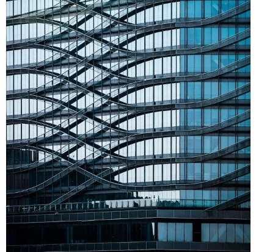

Not just a place
The Museum
The built environment is a rich and varied architectural
tapestry with overlapping styles and movements that
have often traveled around the world, adapting themselves
to different climates, landscapes and cultural needs.
